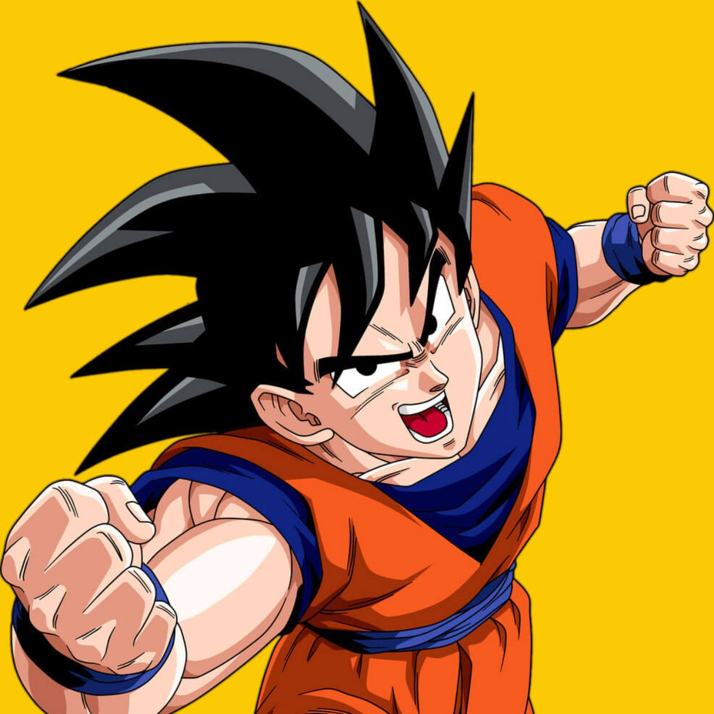

Sinopse:
A história de Dragon Ball começa com Son Goku, um garoto ingênuo e
puro com cauda de macaco e uma força extraordinária. Ele mora sozinho após a morte
de seu avô adotivo em uma montanha chamada Paozu. Um dia ele conhece Bulma, uma
garota muito inteligente da cidade, que estava em busca das sete Esferas do Dragão.
Persuadido, Goku concorda em ajudar Bulma a encontrar as Esferas. Os dois partem em
uma longa jornada, durante a qual eles fazem muitos amigos. Depois, Goku passa por
um treinamento com Kame-Sennin, onde o garoto Kuririn se torna seu parceiro, e participa
de vários torneios mundiais de artes marciais. No curso de seu crescimento e seu
desenvolvimento, ele enfrenta inúmeros inimigos, incluindo Piccolo, que depois se
torna seu aliado. Quando jovem adulto, Goku se casa com Chi-Chi, cumprindo uma promessa
feita por ele quando ambos eram crianças, e possui seu primeiro filho chamado Gohan.
Goku acaba descobrindo que pertence à raça extraterrestre Saiyajin, e que foi enviado
à Terra quando criança para conquistar o planeta. Pouco depois de sua chegada, no
entanto, ele tinha sofrido um ferimento na cabeça, perdendo desta forma a memória
da missão e sua natureza agressiva.
Autor: Akira Toriyama
Adaptações: Dragon Ball Z (1989), Dragon Ball GT (1996)
Gêneros: Jogo eletrônico de luta, RPG eletrônico
| Temporada | Episódios | Temporada | Episódios |
| Dragon Ball | Dragon Ball Z | ||
| Dragon Ball GT | Dragon Ball Kai | ||
| Dragon Ball Super |
